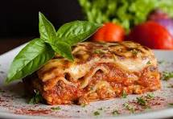

Receta casera lasagna

Descripcion
plato tradicional italiano que consiste en láminas anchas y planas de pasta intercaladas con capas de relleno,
típicamente ragú (carne en salsa de tomate), salsa bechamel y queso, y luego horneado hasta que esté gratinado y burbujeante
Ingredientes a necesitar
- 3 Cucharadas de aceite
- 2 Cebollas medianas
- 1 Diente de ajo
- 2 Zanahorias ralladas
- 1 bandeja de carne molida
- 1 tableta de caldo de verdura
- 2 sobres de salsa de tomate
- 1 taza de agua caliente
- 1 Hoja de laurel
- 1 Cucharada colmada de oregano
- 1/3 Cucharaditas de comino
- 1/2 Cucharadita de aji color
- Sal
- Pimienta
- 2 Paquetes de lasagna pre-cocidas
- 2 Litros de agua caliente
- 1 Sobre de salsa blanca
- 1 Sobre de queso rallado
- 1 Atadito de perejil
Pasos a seguir
- Comienza preparando la salsa boloñesa, para esto calienta las tres cucharadas de aceite de oliva en una olla,
agrega la cebolla con el ajo y la zanahoria. Saltea durante unos segundos hasta ablandar,
enseguida agrega la carne molida y cocina a fuego fuerte removiendo constantemente para evitar la formación de grumos de carne.
Luego vierte el vino tinto de una vez y hierve durante solo 1 minuto.
- Agrega la tableta de caldo de costilla MAGGI® junto con la salsa de tomates y el agua caliente, revuelve para
integrar bien los ingredientes. Agrega la hoja de laurel y condimenta con el orégano, ají color,
comino, sal y pimienta a gusto. Deja cocinar semi-tapado a fuego medio durante 20 minutos revolviendo de vez en cuando para que
la salsa no se pegue. Luego de este tiempo, degusta como está en su condimentación y cocina 10 minutos más hasta ablandar completamente los vegetales.
- Mientras se cocina la salsa, pasa por agua caliente las láminas de lasaña pre-cocida cuidadosamente para que no se rompan.
Una vez lista déjalas de manera extendida, sin amontonarlas para que no se peguen, o bien,
en una bandeja deja una primera capa de láminas y luego cubres con papel film para separarlas unas con otras. Aparte,
prepara la salsa blanca MAGGI® según las indicaciones del envase. Una vez todo listo procedamos con el armado de la lasaña.
- Cubre con láminas de lasaña el fondo de una budinera de horno previamente enmantequillada, enseguida vierte una capa de salsa boloñesa,
cubre nuevamente con láminas de lasaña y repite el procedimiento hasta acabar con ambas preparaciones.
Finalmente cubre la superficie con la salsa blanca preparada y si quieres de manera opcional con queso rallado.
Lleva a horno pre-calentado a temperatura alta de 180°C y hornea durante 30 a 35 minutos hasta cocer bien la lasaña y dorar la superficie.
Retira del horno, deja reposar 5 minutos y luego sirve de inmediato decorada con perejil cortado finamente.
Home